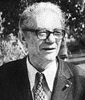

Cahit Arf
1910 yılında Selanik'te doğdu. Yüksek öğrenimini Fransa'da Ecole Normale Superieure'de tamamladı (1932). Bir süre Galatasaray Lisesi'nde matematik öğretmenliği yaptıktan sonra İstanbul Üniversitesi Fen Fakültesi'nde doçent adayı olarak çalıştı. Doktorasını yapmak için Almanya'ya gitti. 1938 yılında Göttingen Üniversitesi'nde doktorasını bitirdi. Yurda döndüğünde İstanbul Üniversitesi Fen Fakültesi'nde profesör ve ordinaryus profersörlüğe yükseldi. Burada 1962 yılına kadar çalıştı. Daha sonra Robert Koleji'nde Matematik dersleri vermeye başladı. 1964 yılında Türkiye Bilimsel ve Teknik Araştırma Kurumu (TÜBİTAK) bilim kolu başkanı oldu.
Daha sonra gittiği Amerika Birleşik Devletleri'nde araştırma ve incelemelerde bulundu; Kaliforniya Üniversitesi'nde konuk öğretim üyesi olarak görev yaptı. 1967 yılında yurda dönüşünde Orta Doğu Teknik Üniversitesi'nde öğretim üyeliğine getirildi. 1980 yılında emekli oldu. Emekliye ayrıldıktan sonra TÜBİTAK'a bağlı Gebze Araştırma Merkezi'nde görev aldı. 1985 ve 1989 yılları arasında Türk Matematik Derneği başkanlığını yaptı.
Arf İnönü Armağanı'nı (1948) ve TÜBİTAK Bilim Ödülü'nü kazandı (1974). Cebir ve Sayılar Teorisi üzerine uluslararası bir sempozyum 1990'da 3 ve 7 Eylül tarihleri arasında Arf'in onuruna Silivri'de gerçekleştirilmiştir. Halkalar ve Geometri üzerine ilk konferanslarda 1984'te İstanbul'da yapılmıştır. Arf, matematikte geometri kavramı üzerine bir makale sunmuştur. Cahit Arf 1997 yılının Aralık ayında bir kalp rahatsızlığı nedeniyle aramızdan ayrıldı...
Cahit Arf’ın Eserleri
Cahit Arf, özellikle cebir alanındaki çalışmalarıyla tüm dünyada ün kazanmıştır. Geometri problemlerinin pergel veya cetvel yardımıyla çözülebileceği hakkında çalışmalar yapmış ve cisimlerin kuadratik formlarının tasnif edilmesinde görülen değişmezlerle alakalı terimler ortaya çıkartmıştır.
Bunlara Arf değişmezi ve Arf halkaları denen terimler matematik dünyasında yer almayı başarmıştır. Bunların dışında Hasse-Arf Teoremi olarak bilinen teorileri de keşfetmiştir. Ülkemizdeki matematiğin günümüzdeki seviyeye gelmesinde Cahit Arf’ın ciddi bir rolü vardır.